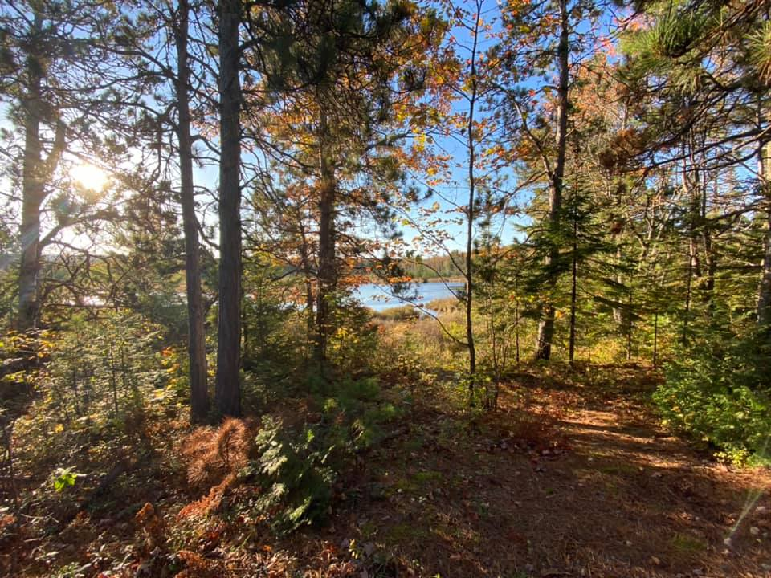
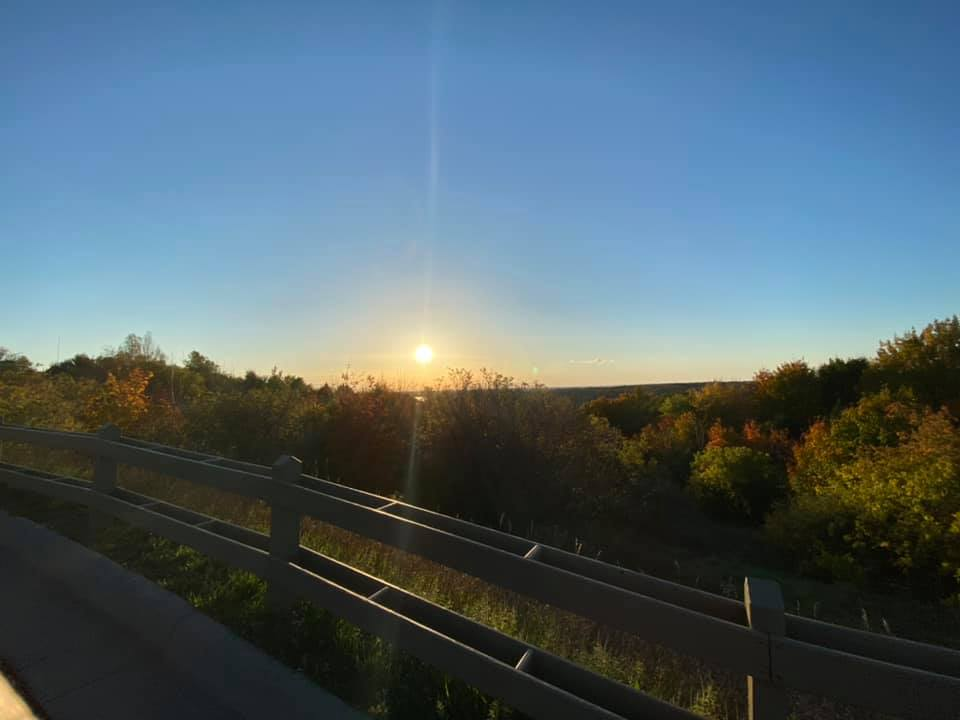
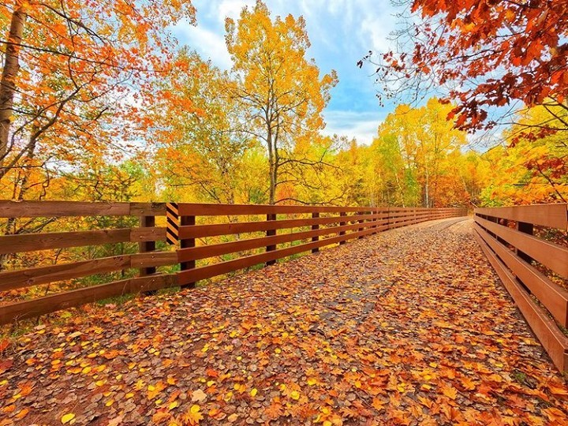
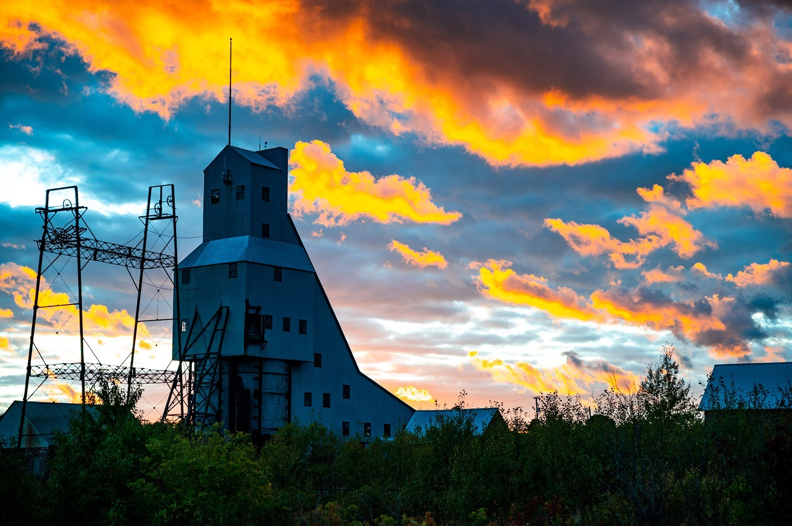
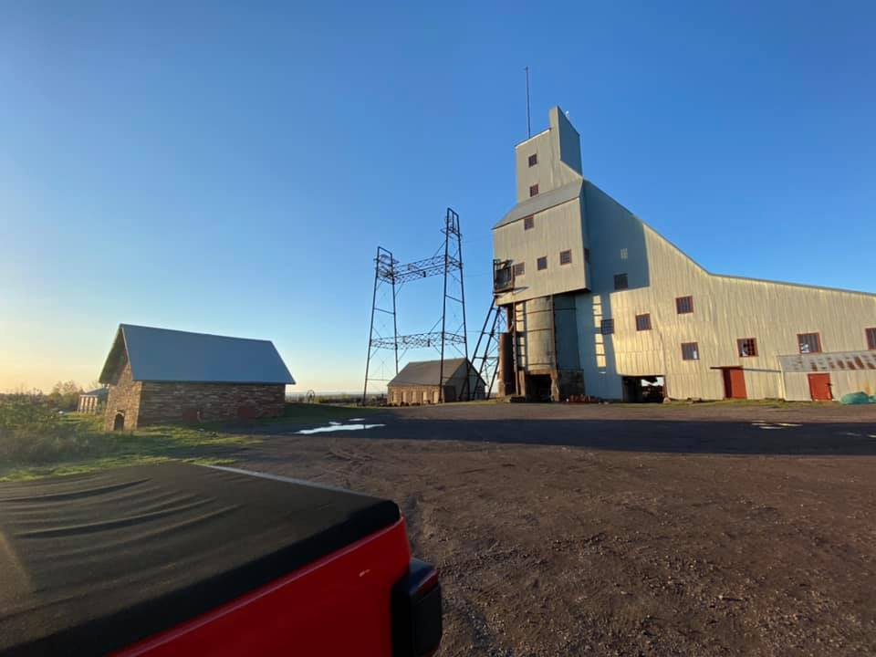
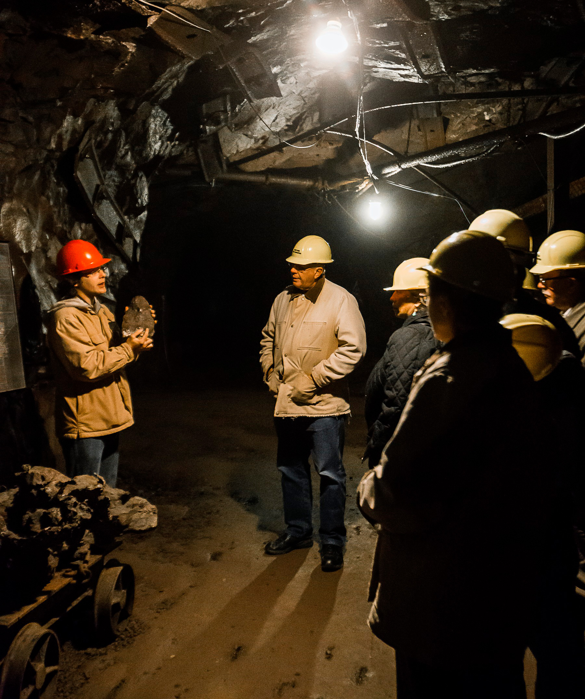
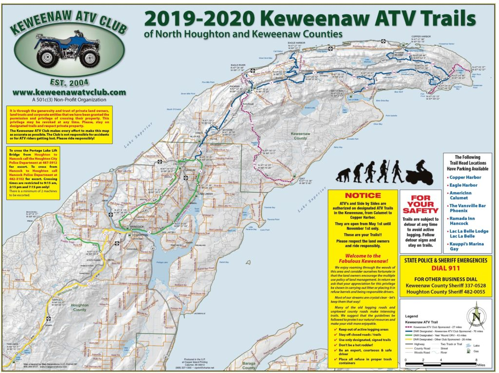
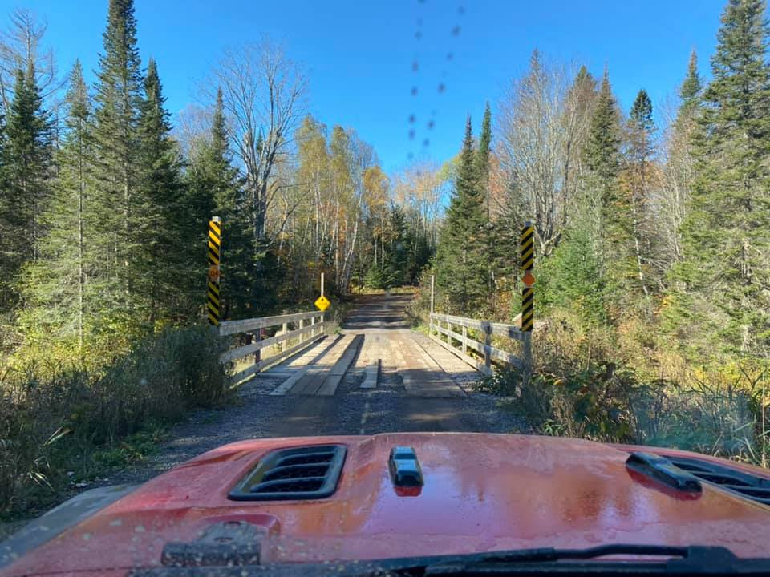
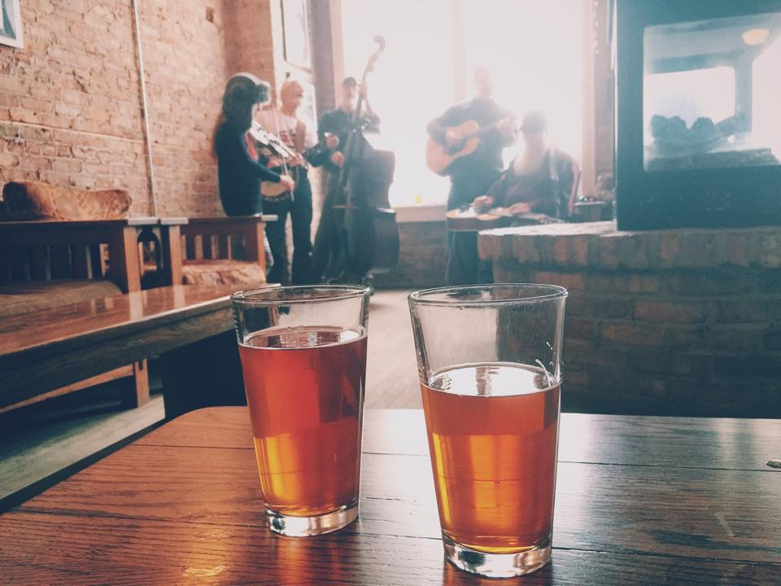
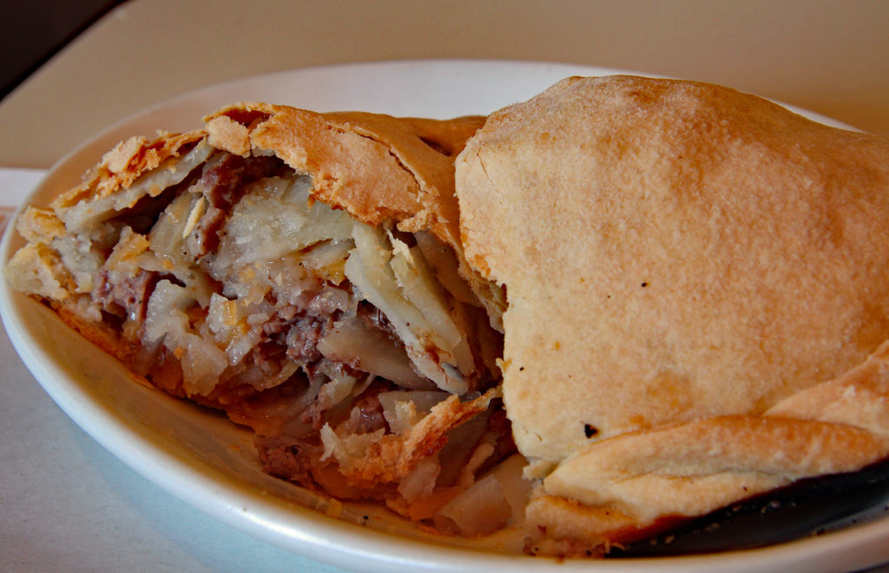

<!-- Keweenaw Trip Page component -->
<h1 style="text-align:center;">Highlighted Trip: Keweenaw Peninsula, Michigan</h1>

<div class="imgs" style="text-align:center;">
    
</div>


<h3 style="text-align:center;">A fall adventure along the coast of Lake Superior, in one of the mort remote places in
    the United States, The Keweenaw Peninsula.</h3>

<br />

<!-- Trip info -->


<div class="list">

    <ul style="border-color: black; border-style: dotted; border-width: 5;">
        <li>Houghton, Michigan</li>
        <li>Trip type: Stay & Play</li>
        <li>Time of Year: October</li>
        <ul>Activities:
            <li>Sightseeing</li>
            <li>Hiking</li>
            <li>Off-roading</li>
            <li>Scenic Drive</li>
            <li>Tours</li>
            <li>Shopping</li>
            <li>Hotel</li>
        </ul>
    </ul>
</div>
<br />
<div>

<!-- blank spot -->


</div>
<br />
<br />
<!-- Area Info -->
<div class="areainfo" style="text-align:center;">
    <h2>Area Information</h2>

    <a href='https://www.keweenaw.info/'>Link to Local Information on Lodging, Restaurants, Activities and More</a>

</div>
<br />
<!-- Mine -->
<div class="mine" style="text-align:center;">
    <h2>Quincy Mine</h2>
    
    
     <br />
    <a>Go underground in a copper mine, ride the Midwest's only cog-wheel tram and see the world's largest steam-powered
        hoist engine ever built, all in one spot!</a>
    <br />


    <a href='https://quincymine.com/'>Link to Information on Mine, Tours, Activities and More</a>
</div>
<!-- Trails -->
<br />
<div class="trails" style="text-align:center;">
    <h3>Trail Riding</h3>
    
    
    

</div>
<br />
<!-- Local info links -->
<div class="callout is-helpful style=text-align:center;">
    

    <strong>A helpful note:</strong>
    Weather it's hiking, ATV/snowmobiling, or off-roading, it's good to have
    information on current trail conditions. Use the QR code with your smartdevice or click on link to see what
    information is available.
    <a href='https://arcg.is/1CayfL0'>Link to Trail Info</a>
    <br/>
</div>

<!-- Trip notes -->
<br/>
<div class="foodanddrink" style="text-align:center;">
    <h2>Craft Brew, Local Food & Lake View</h2>
    <h3>Eating and Drinking in Keweenaw</h3>
    
    
     <br />
    <a>There is much to indulge on in the area, with local brews, regional foods and picturesque lake views</a>
    <br />


    <a href='https://www.keweenaw.info/attractions/where-would-you-like-to-eat/'>Link to Information</a>
</div>

<!-- Couple hi-res photo links -->

<br />
<div>


</div>
<br />